In this lab, you will create the window layout for the Managed InTouch application you set up in Lab 2. By the end, you will have five properly sized and positioned windows that form the skeleton of a complete operator display: a Navigation bar, a Logon panel with a clock, an AlarmDisplay strip, an OverviewDisplay dashboard area, and a ContentDisplay main viewing area. All steps are designed for a 1920×1080 screen resolution.
The target layout you will build in this lab — five windows arranged to fill a 1920×1080 screen.
Key Concept: Screen Layout as a Composition of Overlapping Windows
An InTouch application layout is built by compositing multiple windows at specific pixel coordinates. Each window is positioned using X/Y offsets and sized with Width/Height values. By carefully choosing window types (Overlay vs. Replace), you control which windows persist on screen and which swap in and out at runtime.
8.2 Creating the Navigation Window
The Navigation window sits at the top-left of the screen and will eventually hold buttons for navigating between different displays. Click the New (+) button in the upper-left corner of WindowMaker to open the backstage view. Select Frame window as the template.
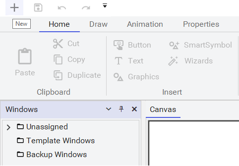
Click the New (+) button to open the backstage and select a window template.
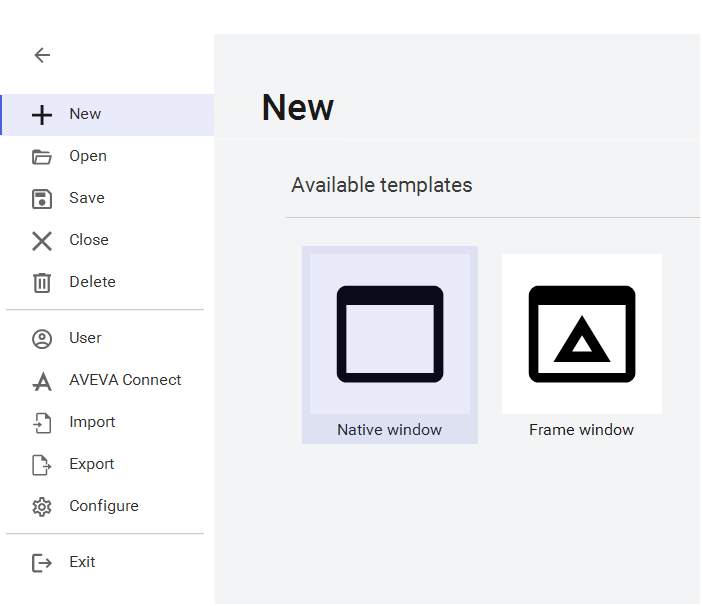
Select Frame window as your template for all windows in this layout.
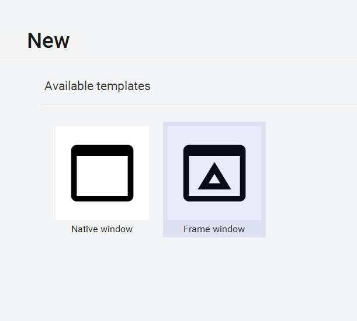
With Frame window selected, you can now configure the window properties.
Configure the Navigation window with these properties:
Name: Navigation
Comment: Display system navigation graphics
Window type: Overlay
Location: X: 0, Y: 0
Size: Width: 1300, Height: 120
Uncheck Title bar and Size controls
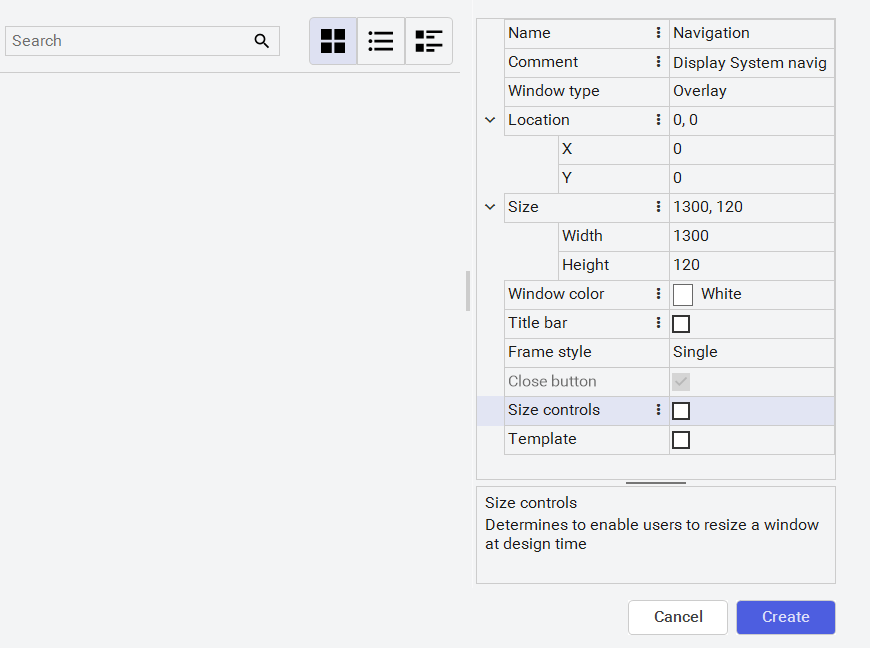
Configure the Navigation window properties — note the Overlay type and exact pixel coordinates.
Click Create. The Navigation window appears on the canvas as a dashed rectangle.
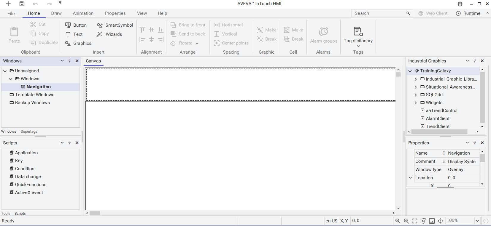
The Navigation window is now listed in the Windows panel and visible on the canvas.
8.3 Creating the Logon Window
The Logon window sits to the right of the Navigation window and will display a clock and logon controls. Using the same Frame window template, configure these properties:
Name: Logon
Comment: Display logon and clock graphics
Window type: Overlay
Location: X: 1300, Y: 0
Size: Width: 620, Height: 120
Uncheck Title bar and Size controls
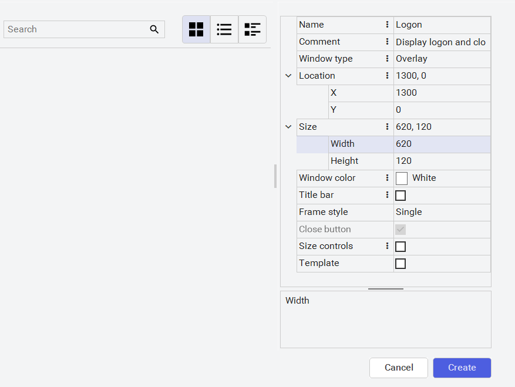
The Logon window is positioned immediately to the right of the Navigation window (X starts at 1300).
After creating the Logon window, scroll the canvas right to verify both top windows are side by side, then scroll back left.
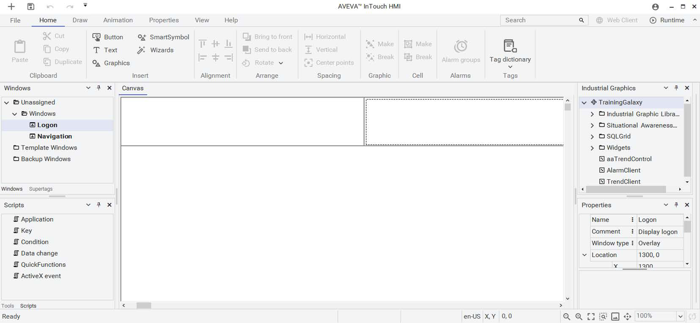
Navigation and Logon windows sitting side-by-side across the top of the screen.
8.4 Creating the AlarmDisplay Window
The AlarmDisplay window is a full-width strip below the Navigation and Logon windows. It will host the Alarm Client symbol in a later lab. Configure it as:
Name: AlarmDisplay
Comment: Display live alarms
Window type: Overlay
Location: X: 0, Y: 120
Size: Width: 1920, Height: 200
Uncheck Title bar and Size controls
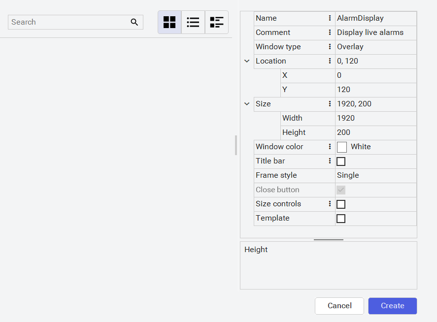
The AlarmDisplay spans the full width of the screen at Y:120, just below the top navigation strip.
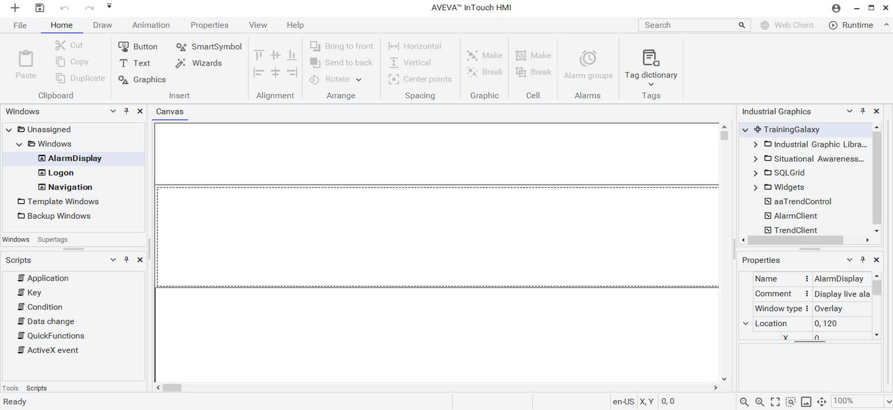
Three windows now visible — the screen is taking shape with the top bar and alarm strip.
8.5 Creating the OverviewDisplay Window
The OverviewDisplay occupies the lower-left area and will show dashboard graphics. It gets a distinctive background color to visually separate it from the main content area:
Name: OverviewDisplay
Comment: Display system overview graphics
Window type: Overlay
Location: X: 0, Y: 320
Size: Width: 420, Height: 680
Window color: Wheat (select from the Web tab in Color Dialog)
Uncheck Title bar and Size controls
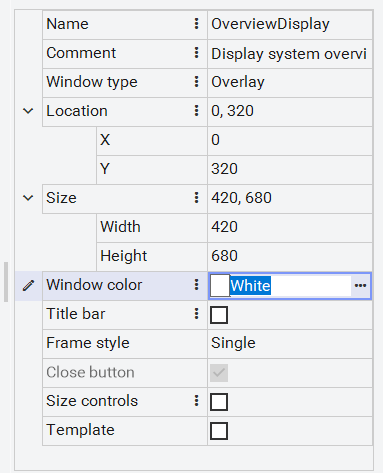
The OverviewDisplay gets a Wheat background color to distinguish it from the main content area.
To set the Wheat color, click the ellipsis button next to Window color, switch to the Web tab in the Color Dialog, scroll to the bottom, and select Wheat.
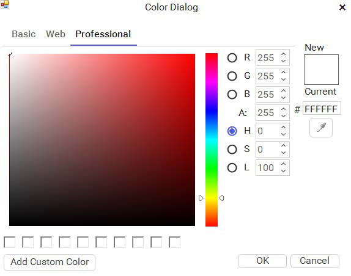
The Color Dialog opens on the Professional tab — switch to the Web tab for named colors.
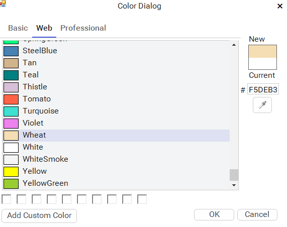
Select Wheat from the Web tab's named color list.
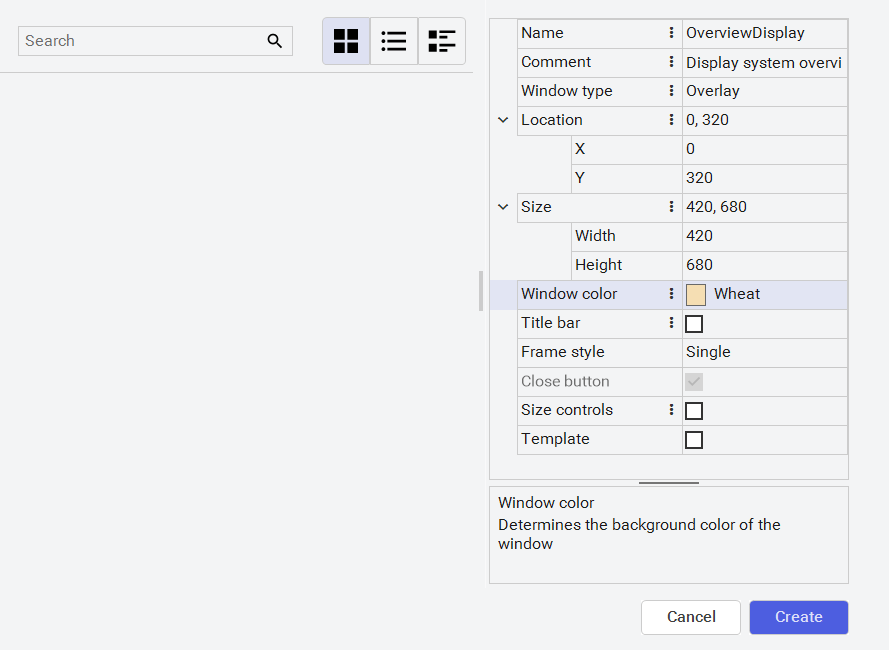
The OverviewDisplay properties now show the Wheat background color.
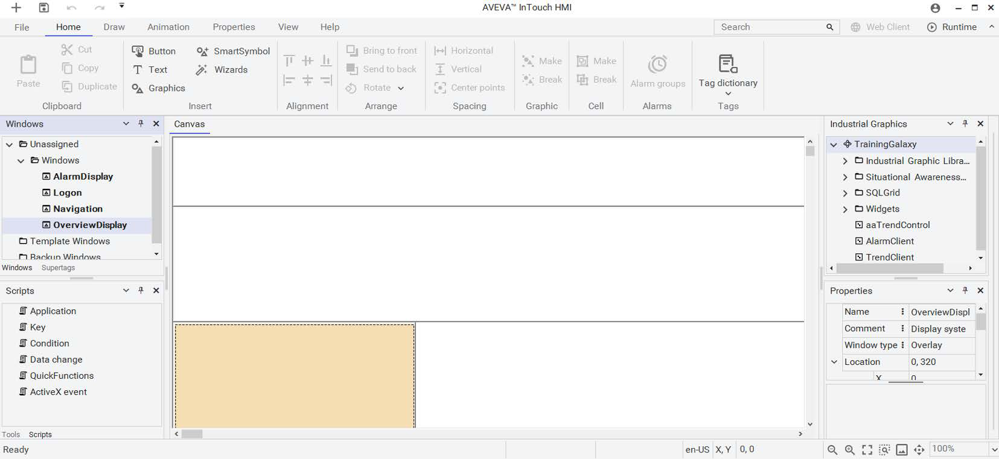
Four windows now visible — the Wheat background color makes the OverviewDisplay stand out.
8.6 Creating the ContentDisplay Window
The ContentDisplay is the largest window and will host the main process graphics. Unlike the other windows, it uses the Replace window type and has a visible title bar:
Name: ContentDisplay
Comment: Display system graphics
Window type: Replace
Location: X: 420, Y: 320
Size: Width: 1500, Height: 680
Window color: White
Check Title bar (leave Size controls unchecked)
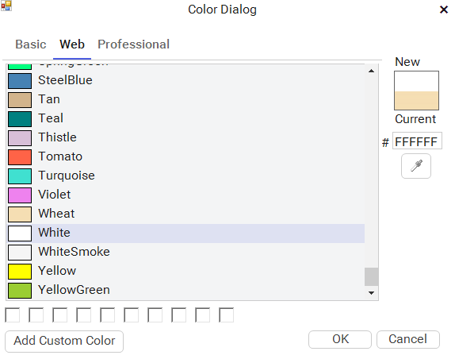
The ContentDisplay uses Replace type so different process views can swap in and out at runtime.
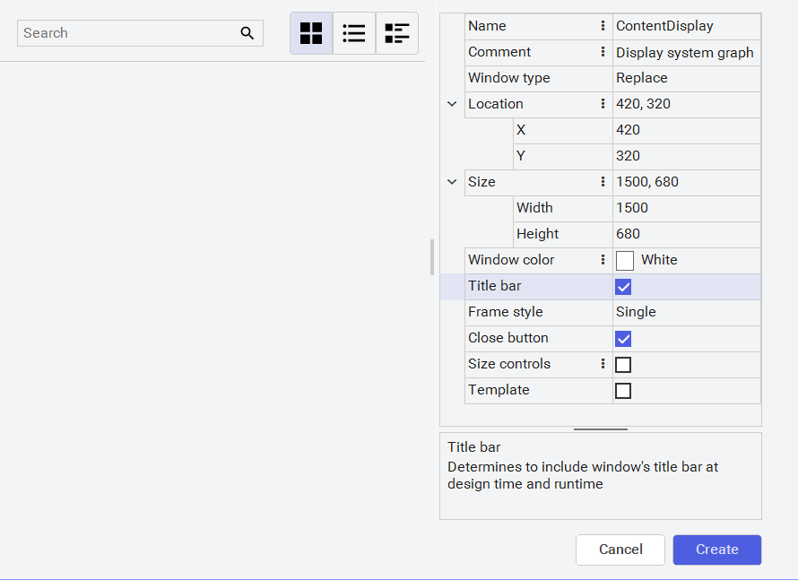
All five windows are now listed in the Windows panel.
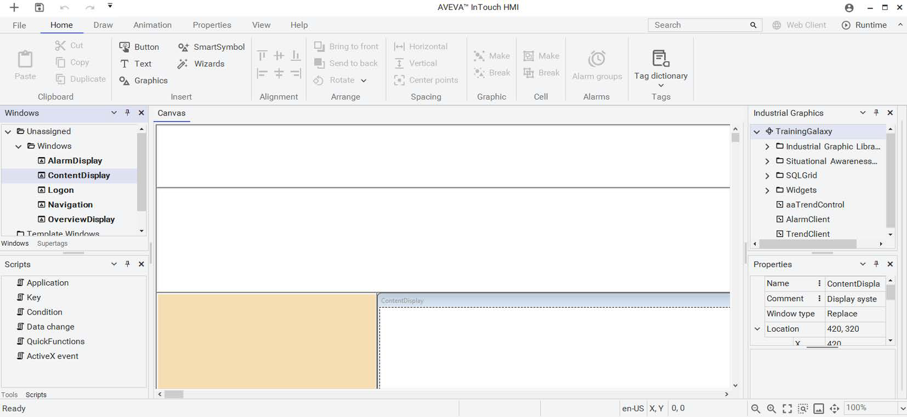
The complete application layout with all five windows positioned and ready for content.
8.7 Embedding a Clock Symbol
To add a visual element to the Logon window, you will embed an analog clock from the Industrial Graphics library. In the canvas, scroll right to the Logon window. In the Industrial Graphics panel, expand Industrial Graphic Library > Clocks and drag ClockAnalogWall onto the Logon window.
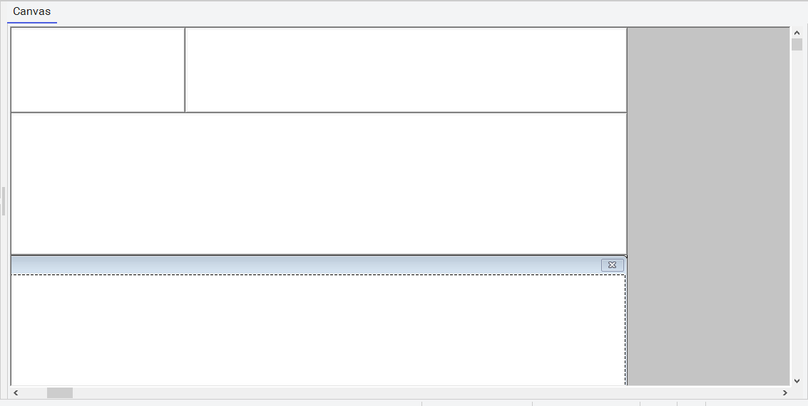
Scroll to the Logon window and locate the Clocks folder in the Industrial Graphics library.
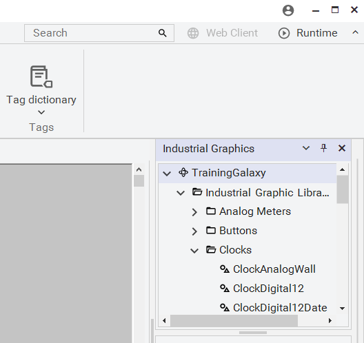
The Clocks folder contains three clock options — drag ClockAnalogWall onto the Logon window.
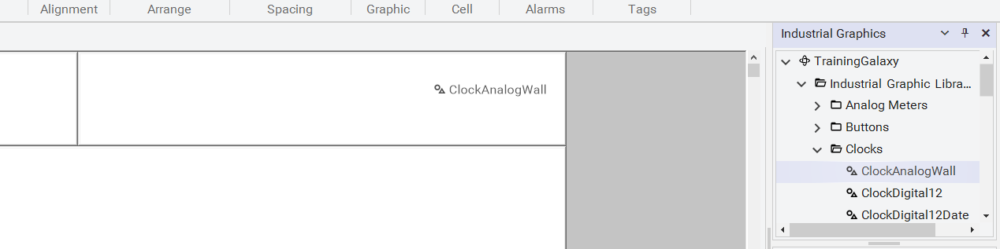
The analog clock is now embedded in the Logon window — position and resize it to fit.
8.8 Testing in Runtime
Click the Runtime button in the top-right corner of WindowMaker to switch to WindowViewer and see your layout in action. WindowMaker automatically saves all open windows before switching. All five windows appear in their configured positions, and the analog clock is running.
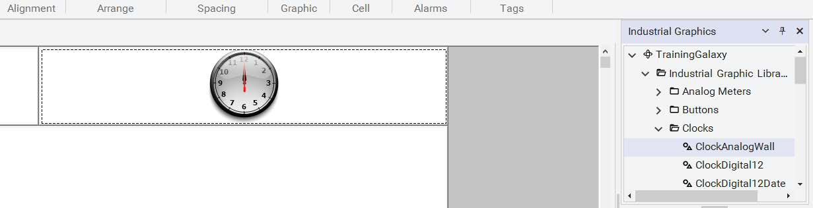
The runtime view shows all five windows composed together, with the live clock in the Logon area.
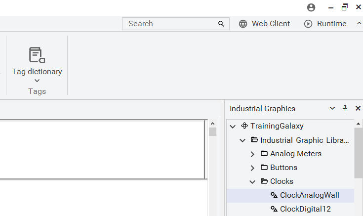
The analog clock displays the current time in the Logon window.
Click Development! to return to WindowMaker.
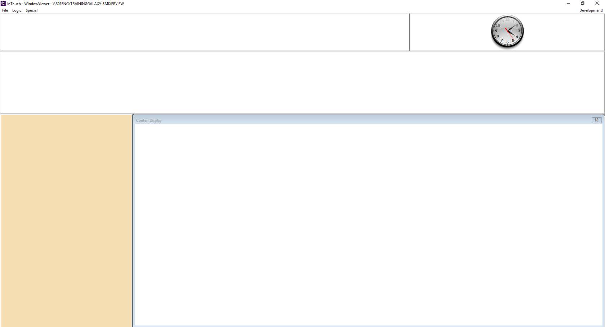
WindowViewer labels each window — click Development! to return to the editor.
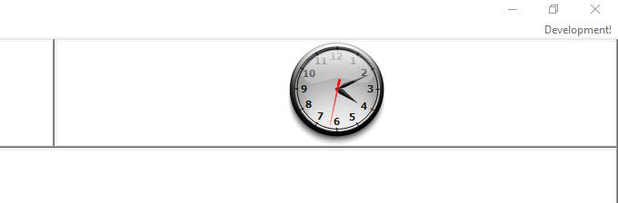
The clock continues running in runtime, displaying the real-time system clock.
8.9 Locking Window Size
The final step is to enable Lock window size to prevent layout distortion on different resolutions. Navigate to File > Configure > WindowMaker, check Lock window size, and click Save.
Open the WindowMaker configuration to find the Lock window size option.
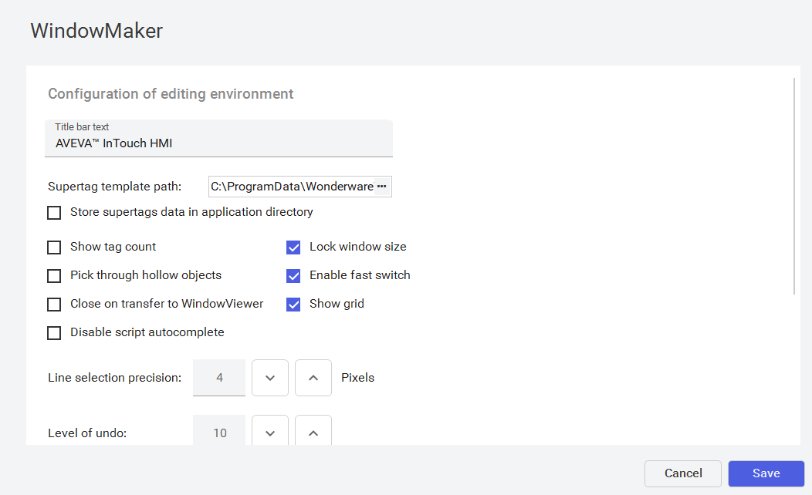
Check Lock window size and click Save — a restart is required for this change.
A notification appears telling you WindowMaker must be restarted for the change to take effect. Close WindowMaker (which also closes WindowViewer). The Check-in dialog appears — enter a comment like "Created windows and configured Lock Window Size" and click Check-in to commit your changes to the Galaxy.
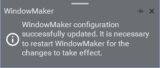
WindowMaker notifies you that a restart is required for the configuration change.
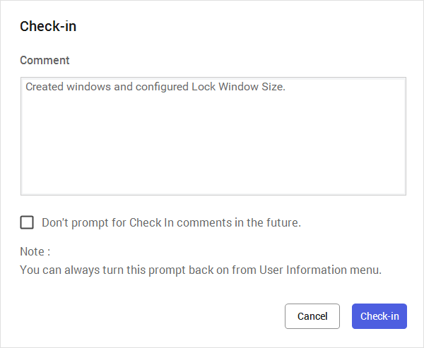
Always include a meaningful comment when checking in changes to the Galaxy.
Common Mistake: Forgetting to check in your changes after modifying the application. If you close WindowMaker without checking in, your changes may be lost or left in an inconsistent state. Always check in with a descriptive comment.
Quiz — Test Your Understanding
Q1: Why is ContentDisplay the only window set to "Replace" type while the others use "Overlay"?
ContentDisplay is the main content area where different process views will swap in and out. Using Replace type means when a new window opens in this area, it automatically closes the previous one. The other windows (Navigation, Logon, AlarmDisplay, OverviewDisplay) use Overlay so they persist on screen and are always visible to the operator.
Q2: What pixel coordinates place the Logon window immediately to the right of the Navigation window?
The Navigation window starts at X:0 and is 1300 pixels wide. The Logon window starts at X:1300, placing it directly to the right. Both share Y:0 and have the same height (120 pixels), creating a seamless top bar.
Q3: What does the "Lock window size" setting do, and why is a restart required?
Lock window size fixes the window dimensions to the design-time values, preventing distortion when the application runs at a different resolution. A restart is required because this setting affects how WindowMaker initializes its rendering engine — it cannot be changed while the editor is running.
Q4: How do you embed an Industrial Graphic symbol into a window?
In the Industrial Graphics panel, navigate to the desired graphic (e.g., Industrial Graphic Library > Clocks > ClockAnalogWall), then drag and drop it onto the target window in the canvas. You can then position and resize it as needed.
Source: AVEVA InTouch for System Platform 2023 Training Manual, Module 2 (pages 61–80)